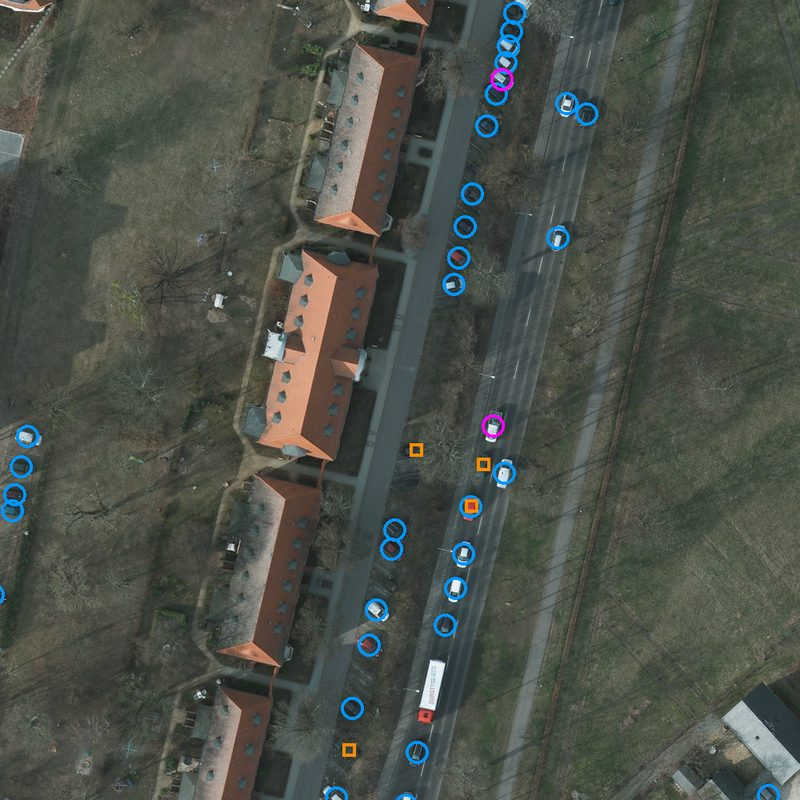

Supporting prototype 3 · The data behind the AI
Can we train our own car counter from scratch?
Case: Orbital Insight. In Prototype 2 we reused a ready-made model; here we train one ourselves.
Correction (18 Nov): an earlier version of this page said our model was clearly worse (65% found). That came from a bug in our test code, which passed image colours in the wrong order. Training was not affected; every test below has been re-run with the bug fixed.
1. What we did
We started from YOLO11n, a small general-purpose detector trained on everyday photos (COCO). It had never seen an aerial image. COWC marks each car with one dot, so we turned every dot into a 3.6 m square box. We resampled every image to 10 cm per pixel, and added a blurred, compressed copy of each tile so the model would also learn the softer look of French IGN photos. Training: 30 rounds with random rotations and flips, about one hour on 2 CPU cores.
| Data | Tiles (COWC Potsdam) | Cars marked by hand | Used for |
|---|---|---|---|
| Training | 2_10, 2_11, 2_13, 3_10 | 515 | Teaching the model |
| Validation | 6_8 | 188 | Watching progress, choosing the confidence cut-off (0.55) |
| Test | 2_12 | 113 | Final score only, never seen before |

2. Test on a tile neither model was trained on (COWC 2_12)
| Model | Learned from | Counted | Right | False alarms | Missed | Found | Right of counted |
|---|---|---|---|---|---|---|---|
| Ours (YOLO11n) | 515 cars, 4 tiles, 1 hour CPU | 106 | 102 | 4 | 11 | 90% | 96% |
| Ready-made (YOLO11m-OBB) | DOTA: 2,806 images, 188,282 objects | 117 | 106 | 11 | 7 | 94% | 91% |
On Potsdam images, 515 well-matched examples were enough to match a model trained on hundreds of times more data. Our model misses a few more cars than the ready-made one, but raises fewer false alarms.

3. On the French IGN photo of Auchan Englos
Same area we checked by eye in Prototype 2 (about 100 cars). With the cut-off chosen on Potsdam (0.55), our model finds only 69 cars: it is less sure of itself on the softer French photos, even though we trained it on blurred copies. Lowering the cut-off to 0.25 brings it to about 95; the browser tool uses 0.25 for this reason. The ready-made model (medium size, ×5 zoom and sharpening) finds 95 in the area. A model trained on one city's photos needs re-tuning for another country's photos.


4. What it means for Orbital Insight and a new entrant
The model is not the moat. A free architecture, 515 public labels and an hour of computing gave us a car counter as accurate as the ready-made one, on the images it was trained for.
The work is in matching the model to the image supply. The same model lost a third of its cars on French photos until re-tuned. A vendor buying images from several satellites and planes must label and check each source, and keep doing it as sensors change. That is ongoing work and cost rather than a one-time invention, and anyone with free public datasets can now start it. What stays hard to copy is a long, consistent record of images of the same places, bought frequently enough to say something about a quarter.
5. Limits
One test tile (113 cars) and one hand-checked IGN area (~100 cars, counted once by eye), so differences of a few points are noise. The test tile comes from the same city (Potsdam) and camera as our training tiles, which favours our model. The models also differ in size (ours small, the ready-made one medium). COWC gives dots, not car outlines, so our boxes are fixed 3.6 m squares. We trained 30 rounds on a CPU; a GPU, more rounds and the eight unused Potsdam tiles would likely help. Code written with an AI assistant and checked by us against the hand labels and by eye.